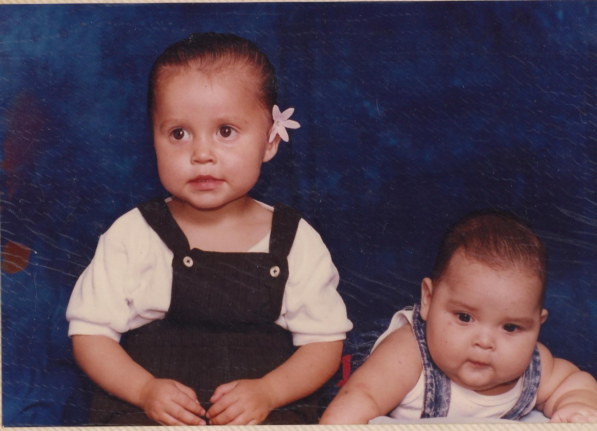
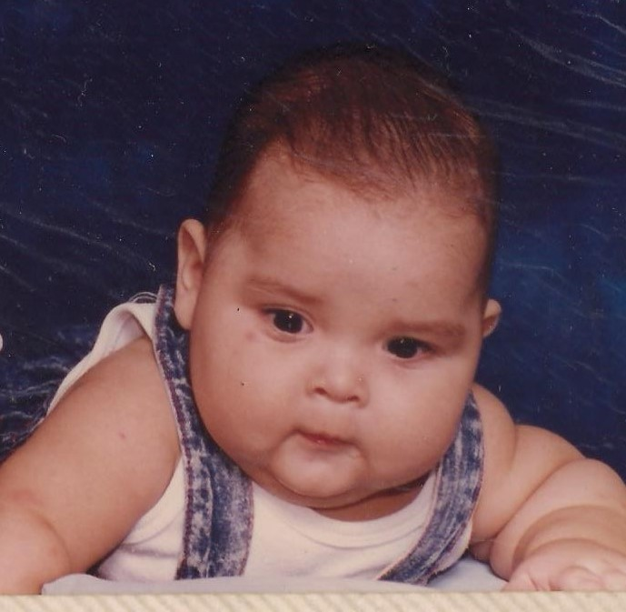
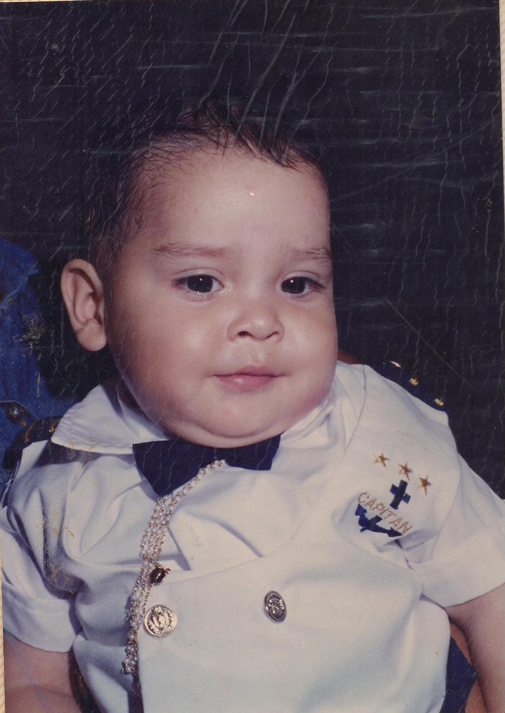
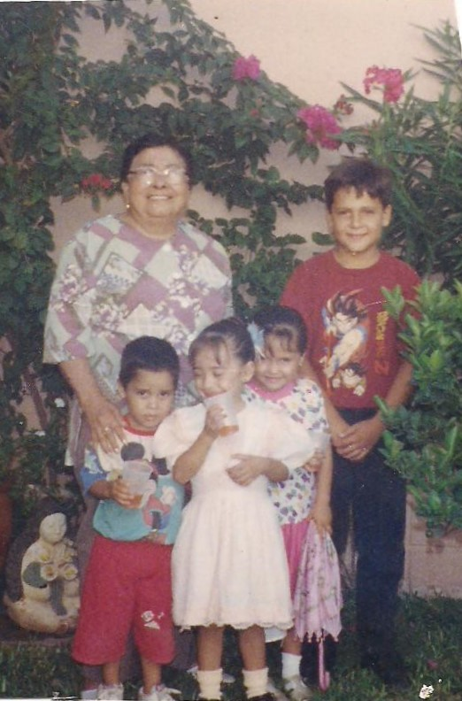

Al cumplir los 6 meses llegue a pesar 15kg. Estos somos mi hermana y yo de bebé.
Se me hacían unas lonjitas en los brazos que parecía hijo de Michelin. Aquí la comparación.
O también se parecen a una raza de perros que se llama shar pei, esos perros sí que tienen lonjitas.
Pero vestido de marinero me veia super bien.
Aquí estamos unos primos y mi bisabuela. Yo soy el mas pequeño
Mi mama en su niñes vivía en un rancho más aya de San José de Ahome llamado Las Grullas ahí nació y vivió hasta que en el año de 1982 llego el huracán Paul y debido a esto se desbordo el rio y no hubo más que hacer que desalojar el lugar. Vivieron en diversas partes antes de venir a Los Mochis como las Higueras. Cuando llegaron y se quedaron en Los Mochis mi mama se tuvo que poner a trabajar desde muy pequeña ya que no tenían ni con que comer. Ella misma se pagó la escuela secundaria ya que mis abuelos no tenían para pagarla y le decían que se saliera que no servía para nada pues en ese entonces ella lo único que quería era estudiar. Paso por diversos trabajos en el mercado el los jugos en la esquina del chiflador, en pollerías, en la ley, en el supermercado mz, en casa limpiando, bueno muchísimas partes solo para poder estudiar. Mientras trabajo de cajera en Ley tabachines conoció a mi papa el trabajaba de seguridad.